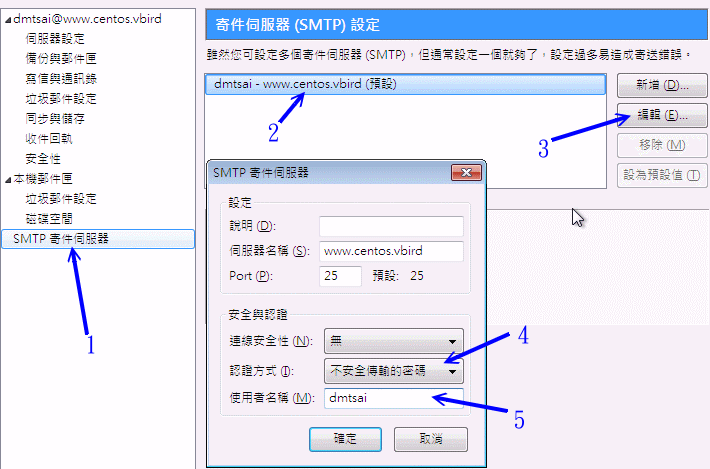
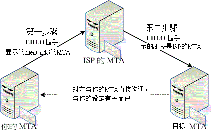

22.5 邮件服务器的进阶设定
时至今日，邮件攻击主要的问题已经不是病毒与木马了，大多数的垃圾邮件多是钓鱼以及色情广告。 网络钓鱼的问题在于用户的莫名好奇心以及较糟糕的操作习惯，这部份很难处理。色情广告则是防不胜防，你想出一个过滤机制， 他就使用另一个机制来丢你！用严格的过滤机制吗？又可能将正常的信件抵挡掉，真是要命啊！所以，还是请用户直接删除比较好。 因此，在这一个小节当中，关于收信的过滤机制方面，鸟哥移除了前一版介绍的病毒扫瞄以及自动学习广告机制了。 如果你还是有相关的需要，可能得要自行查查相关的官方网站啰！不好意思啦！
另外，底下主要针对 postfix 的邮件收下过滤处理，以及重新发送的 Relay 过程进行介绍。这两个过程在 postfix 的设定中，主要有几个重要的项目管理：
smtpd_recipient_restrictions：recipient 是收件者的意思，这个设定值主要在管理『由本机所收下的信件』的功能，因此大部分的设定都是在进行邮件过滤以及是否为可信任邮件的意思。 来源可以是 MTA 或 MUA 的意思；
smtpd_client_restrictions：client 是客户端的意思，因此主要在管理客户端的来源是否可信任。 可以将非正规的 mail server 来信拒绝掉的！来源当然就是 MUA 啰；
smtpd_sender_restrictions：sender 是寄件人的意思，可以针对信件来源 (对方邮件服务器) 来进行分析过滤的动作。来源理论上就是 MTA 啦！
22.5.1 邮件过滤一：用 postgrey 进行非正规 mail server 的垃圾信抵挡
早期的广告信很多都是藉由僵尸计算机 (已经被当作跳板但管理员却没有发现或没有处理的主机) 来发送的， 这些僵尸计算机所发送的信件有个很明显的特色，就是『他只会尝试传送该封电子邮件一次， 不论有无成功，该封信就算发出去了，故该信件将被移出队列中。』 不过，合法的 mail server 运作流程就如 22.2.8 分析的一般，在邮件无法顺利寄出时该邮件会暂时放置到队列中一段时间， 并一直尝试将信件寄出的动作，预设直到五天后若还是无法寄出才会将信件退回。
根据这个合法与非法的邮件服务器运作流程而发展出一套所谓的曙光 (postgrey) 软件， 你可以参考底下的几个说明来了解这个软件：
基本上 postgrey 主要的功能是在记录发信来源而已，若发信来源同一封信第一次寄来时， postgrey 默认会抵挡他，并且将来源地址记录起来，在约 5 分钟后，若该信件又传来一次时， 则该信件会被收下来。如此则可以杜绝非发邮件服务器单次发送的问题喔！ ^_^！ 但对于你确定合法的主机则可以开放所谓的『白名单 (whitelist) 』来优先通过而不抵挡。 所以说，他主要是这样进行的：(参考http://projects.puremagic.com/greylisting/whitepaper.html)
- 确认发信来源是否在白名单中，若是则予以通过；
- 确认收信者是否在白名单中，若是则予以通过；
确定这封信是否已经被记录起来呢？放行的依据是：
- 若无此信件的记录，则将发信地址记录起来，并将信件退回；
- 若有此信件的记录，但是记录的时间尚未超过指定的时间 (预设 5 分钟)，则依旧退回信件；
- 若有信件的记录，且记录时间已超过指定的时间，则予以通过；
整个过程简单的来说就是这样而已。不过为了要快速的达成 postgrey 的『记录』能力，所以数据库系统又是不可避免的东西。 且 postgrey 是由 perl 写成的，你可能也需要加入很多相依的 perl 模块才行。总的来说，你需要的软件至少要有：
- BerkeleyDB： 包括 db4, db4-utils, db4-devel 等软件：
- Perl： 使用 yum install perl 即可；
Perl 模块： perl-Net-DNS 是 CentOS 本身有提供的，其他没有提供的可以到 http://rpmfind.net/去搜寻下载。
安装流程：
因为 CentOS 官方已经提供了一个连结可以找到所有的在线 yum 安装方式，你可以参考：
- 官网介绍：http://wiki.centos.org/HowTos/postgrey
- 在线安装软件：http://wiki.centos.org/AdditionalResources/Repositories/RPMForge
鸟哥假设你已经下载了 http://packages.sw.be/rpmforge-release/rpmforge-release-0.5.2-2.el6.rf.x86_64.rpm 这个软件且放置到 /root 底下，然后这样做：
[root@www ~]# rpm --import http://apt.sw.be/RPM-GPG-KEY.dag.txt
[root@www ~]# rpm -ivh rpmforge-release-0.5.2-2.el6.rf.x86_64.rpm
[root@www ~]# yum install postgrey
上述的动作在进行数字签名档案的安装、yum 配置文件的建置，以及最终将 postgrey 透过网络安装起来而已！ 整个流程简单到不行呢！最重要的是，找到适合你的 yum 配置文件软件来安装就是了！
- 启动与设定方式：
因为 postgrey 是额外的一个软件，因此我们还是得要将它视为一个服务来启动，同时 postgrey 是本机的 socket 服务而非网络服务，他只提供给本机的 postfix 来作为一个外挂，因此观察的方式并不是观察 TCP/UDP 之类的联机喔！底下让我们来瞧瞧启动与观察的过程吧！
[root@www ~]# /etc/init.d/postgrey start
[root@www ~]# chkconfig postgrey on
[root@www ~]# netstat -anlp | grep postgrey
Active UNIX domain sockets (servers and established)
Proto RefCnt Type State PID/Program Path
unix 2 STREAM LISTENING 17823/socket /var/spool/postfix/postgrey/socket
上表中最重要的就是那个输出的 path 项目啦！/var/spool/postfix/postgrey/socket 是用来做为程序之间的数据交换， 这也是我们的 postfix 要将信件交给 postgrey 处理的一个相当重要的接口！有了这个数据后，接下来我们才能够开始修改 postfix 的 main.cf 啰！
[root@www ~]# vim /etc/postfix/main.cf
# 1\. 更改 postfix 的 main.cf 主配置文件资料：
# 一般来说，smtpd_recipient_restrictions 得要手动加入才会更动默认值：
smtpd_recipient_restrictions =
permit_mynetworks, <==默认值，允许来自 mynetworks 设定值的来源
reject_unknown_sender_domain, <==拒绝不明的来源网域 (限制来源 MTA )
reject_unknown_recipient_domain, <==拒绝不明的收件者 (限制目标 MTA)
reject_unauth_destination, <==默认值，拒绝不信任的目标
**check_policy_service unix:/var/spool/postfix/postgrey/socket**
# 重点是最后面那一行！就是指定使用 unix socket 来连接到 postgrey 之意。
# 后续我们还有一些广告信的抵挡机制，特别建议您将这个 postgrey 的设定值写在最后，
# 因为他可以算是我们最后一个检验的机制喔！
# 2\. 更改 postgrey 的抵挡秒数，建议将原本的 300 秒 (五分钟) 改为 60 秒较佳：
[root@www ~]# vim /etc/sysconfig/postgrey <==预设不存在，请手动建立
OPTIONS="--unix=/var/spool/postfix/postgrey/socket --delay=60"
# 重点是 --delay 要抵挡几秒钟，默认值为 300 秒，我们这里改为 60 秒等待。
[root@www ~]# /etc/init.d/postfix restart
[root@www ~]# /etc/init.d/postgrey restart
由于过往的经验指出，等待 5 分钟有时候会让某些正常的 mail server 也会被拒绝好久，对于紧急的信件来说，这样有点不妥。 因此，CentOS 官网也建议将这个数值改小一点，例如 60 秒即可。反正，不正常的信件第一次寄就会被拒绝， 等多久似乎也不是这么重要了。然后，在 postfix 的设定中，默认值仅有允许本机设定 (permit_mynetworks) 以及拒绝非信任的目标 (reject_unauth_destination)，鸟哥根据经验，先加入拒绝发件人 (MTA) 的不明网域以及拒绝收件者的不明网域的信件了， 这样也能够减少一堆不明的广告信件。最终才加入 postgrey 的分析。
要注意的是，smtpd_recipient_restrictions 里面的设定是有顺序之分的！以上面的流程来说， 只要来自信任用户，该封信件就会被收下会转递，然后不明的来源与目标会被拒绝，不受信任的目标也会被拒绝， 这些流程完毕之后，才开始正常信件的 postgrey 机制处理！这样其实已经可以克服一堆广告信了！ 接下来，让我们测试看看 postgrey 有没有正常运作！请在外部寄一封信到本机来吧！例如寄给 dmtsai@www.centos.vbird， 然后查一下 /var/log/maillog 的内容看看：
Aug 10 02:15:44 www postfix/smtpd[18041]: NOQUEUE: reject: RCPT from vbirdwin7[192.168.100.30]: 450 4.2.0 <dmtsai@www.centos.vbird>: Recipient address rejected: Greylisted, see http://postgrey.schweikert.ch/help/www.centos.vbird.html; from=<dmtsai@www.centos.vbird> to=<dmtsai@www.centos.vbird> proto=ESMTP helo=<[192.168.100.30]>
鸟哥事先取消 permit_mynetworks 之后才开始测试，测试完毕后又将 permit_mynetworks 加回来才好！这样才能看到上述的资料。 这表示 postgrey 已经开始顺利运作了！并且来源主机的相关记录也已经记载在 /var/spool/postfix/postgrey/ 目录下啰！如此一来您的 postfix 将可以透过 postgrey 来挡掉一些莫名其妙的广告信啰！
- 设定不受管制的白名单：
不过 postgrey 也是有缺点的，怎么说呢？因为 postgrey 预设会先将信件退回去，所以你的信件就可能会发生延迟的问题， 延迟的时间可能是数分钟到数小时，端看你的 MTA 设定而定。如果你想要让『某些信任的邮件主机不需要经过 postgrey 的抵挡机制』时，就得要开放白名单啰！
白名单的开启也很简单啊，直接编写 /etc/postfix/postgrey_whitelist_clients 这个档案即可。 假设你要让鸟哥的邮件服务器可以自由的将信寄到你的 MTA 的话，那么你可以在这个档案内加入这一行：
[root@www ~]# vim /etc/postfix/postgrey_whitelist_clients
mail.vbird.idv.tw
www.centos.vbird
# 将主机名写进去吧！
[root@www ~]# /etc/init.d/postgrey restart
如果你还有更多信任的 MTA 服务器的话，将他写入这个档案当中！那他就可以略过 postgrey 的分析啰！ 更进阶的用法就得要靠您自己去发掘啰！ ^_^
22.5.2 邮件过滤二：关于黑名单的抵挡机制
还记得 22.1.5 讲到的 Open Relay 的问题吧？你的 MTA 可千万不能成为 Open Relay 的状况，否则对你的网络与『信用』影响很大喔！一般来说，只要是 Open Relay 的邮件 MTA 都会被列入黑名单当中， 例如台湾地区的学术网络黑名单以及因特网社会上提供的黑名单数据库：
既然黑名单数据库里面的 mail server 本身就是有问题的邮件主机，那么当黑名单里面的主机想要跟我的 mail server 联机时，我当然可以『合理的怀疑该信件是有问题的！』您说是吧！ 所以来自黑名单或者是要送至黑名单的信件最好是不要接受啦！
您当然可以自行前往该网站将有问题的主机列表给他加入自己的邮件主机抵挡机制当中， 不过就是不太人性化！既然因特网社会已经提供了黑名单数据库了，我们就可以利用这个数据库来抵挡嘛！ 在决定是否进行 Relay 之前，先要求我们的 postfix 前往追踪黑名单的数据库， 若目标的 IP 或主机名是黑名单的一员，则我们就将该信件拒绝啰！
Postfix 设定黑名单检验真的很简单，你只要这样做即可：
[root@www ~]# vim /etc/postfix/main.cf
smtpd_recipient_restrictions =
permit_mynetworks,
reject_unknown_sender_domain,
reject_unknown_recipient_domain,
reject_unauth_destination,
reject_rbl_client cbl.abuseat.org,
reject_rbl_client bl.spamcop.net,
reject_rbl_client cblless.anti-spam.org.cn,
reject_rbl_client sbl-xbl.spamhaus.org,
check_policy_service unix:/var/spool/postfix/postgrey/socket
# 请注意整个设定值的顺序才好！在 postgrey 之前先检查是否为黑名单！
smtpd_client_restrictions =
check_client_access hash:/etc/postfix/access,
reject_rbl_client cbl.abuseat.org,
reject_rbl_client bl.spamcop.net,
reject_rbl_client cblless.anti-spam.org.cn,
reject_rbl_client sbl-xbl.spamhaus.org
# 这个设定项目则是与客户端有关的设定！拒绝客户端本身就是黑名单的一员！
smtpd_sender_restrictions = reject_non_fqdn_sender,
reject_unknown_sender_domain
# 此项目则在抵挡不明的送件者主机网域啰！与 DNS 有关系的哪！
[root@www ~]# /etc/init.d/postfix restart
上表当中的特殊字体部分『reject_rbl_client』是 postfix 内的一个设定项目，后面可以接因特网上提供的黑名单！ 您得要注意的是，这个黑名单数据库可能会持续的变动，请您先以 dig 的方式检查每个数据库是否真的存在， 如果存在才加以设定在您的主机上头啊！(因为因特网上头很多文献所提供的黑名单数据库似乎已经不再持续服务的样子！)
- 检查你的邮件服务器是否在黑名单当中？
既然黑名单数据库所记录的是不受欢迎的来源与目标 MTA ，那么您的 MTA 当然最好不要在该数据库中嘛！ 同时这些数据库通常也都有提供检测的功能，所以你也可以用该功能来检查你的主机是否『记录有案』呢？ 你可以这样处理的：
是否已在黑名单数据库中： 确认的方法很简单，直接到『http://cbl.abuseat.org/lookup.cgi 』输入您的主机名或者是 IP ，就可以检查是否已经在黑名单当中；
是否具有 Open Relay： 如果要测试你的主机有没有 Open Relay ，直接到『http://rs.edu.tw/tanet/spam.html 』这个网页， 在这个网页的最下方可以输入你的 IP 来检查，注意喔，不要使用别人的 email IP 吶！ 此时该主机会发出一封 mail 的测试信看看你的 mail server 会不会主动的代转， 然后将结果回报给您。要注意的是，回传的网页可能有编码的问题，如果出现乱码时，请调整为 big5 编码即可。
如何移除： 如果被检查出，您的主机已经在黑名单当中，那么请立刻将 Open Relay 的功能关闭，改善你的 Mail Server 之后，你可能还要到各个主要的 Open Relay 网站进行移除的工作。如果是学术网络的话， 请与您单位的管理员联络。至于一般常见的黑名单数据库则通常会主动的帮您移除，只不过需要一些时间的测试就是了。
总之您必须要确定你不在黑名单当中，且最好将黑名单的来源给拒绝掉！搞定！ ^_^
22.5.3 邮件过滤三：基础的邮件过滤机制
在整封信的传送流程当中，客户端若通过主机的重重限制后，最终应该可以到达邮件队列当中。 而由队列当中要送出去或者是直接送到 mailbox 就得要透过 MDA 的处理。MDA 可以加挂很多机制呢！ 尤其是他可以过滤某些特殊字眼的广告信件或病毒信件呢！ MDA 可以透过分析整封信件的内容 (包括标头以及内文) 来撷取有问题的关键词，然后决定这封信的『命运』说！
咱们的 postfix 已经有内建可以分析标头或者是内文的过滤机制了，那就是 /etc/postfix/ 目录下的 header_checks 以及 body_checks 这两个档案啊！在预设的情况下这两个档案不会被 postfix 使用， 你必需要用底下的设定来启用他：
[root@www ~]# vim /etc/postfix/main.cf
header_checks = regexp:/etc/postfix/header_checks
body_checks = regexp:/etc/postfix/body_checks
# 那个 regexp 代表的是『使用正规表示法』的意思啦！
[root@www ~]# touch /etc/postfix/header_checks
[root@www ~]# touch /etc/postfix/body_checks
[root@www ~]# /etc/init.d/postfix restart
接下来你必需要自行处理 header_checks 以及 body_checks 的规则设定，在设定前请您确认『 你对于正规表示法是熟悉的 』才行！因为很多信息都必需要透过正规表示法来处理啦！然后开始设定的依据是：
- 只要是 # 代表该行为批注，系统或直接略过；
- 在默认的规则当中，大小写是视为相同的；
规则的设定方法为：
>
> /规则/ 动作 显示在登录文件里面的讯息 >请注意，要使用两个斜线『 / 』将规则包起来喔！举个例子来说明：例如我想要 (1)抵挡掉标题为 A funny game 的信件，(2)并且在登录文件里面显示 drop header deny，则可以在 header_chekcs 档案中可以这样写：
>
> /^Subject:.*A funny game/ DISCARD drop header deny >关于动作有底下几个动作：
- REJECT ：将该封信件退回给原发信者；
- WARN ：将信件收下来，但是将该封信的基本数据记录在登录文件内；
- DISCARD：将该封信件丢弃，并不给予原发信者回应！
鸟哥自己有作一些规则的比对，只不过.....效能不好！如果您有兴趣的话，可以自行下载来看看， 不过，使用的后果请自行评估！因为每个人的环境都不一样嘛！
- header: http://linux.vbird.org/linux_server/0380mail/header_checks
- body: http://linux.vbird.org/linux_server/0380mail/body_checks
记得，如果你自行修改过这两个档案后，务必要检查一下语法才行！
[root@www ~]# postmap -q - regexp:/etc/postfix/body_checks \
> < /etc/postfix/body_checks
如果没有出现任何错误，那就表示您的设定值应该没有问题啦！另外，你也可以使用 procmail 这个抵挡的小程序来处理。 不过，鸟哥觉得 procmail 在大型邮件主机当中，分析的过程太过于繁杂，会消耗很多 CPU 资源，因此后来都没有使用这玩意儿了。
22.5.4 非信任来源的 Relay：开放 SMTP 身份认证
在图 22.1-1 的流程当中，由 MUA 透过 MTA 来寄发信件时 (具有 Relay 的动作时)，理论上 MTA 必需要开放信任用户来源才行，这就是为啥我们必需要在 main.cf 里头设定 smtpd_recipient_restrictions 那个设定项目的原因了 (mynetworks)！不过人总有不方便的时候，举例来说，如果你的客户端使用的是拨接制的 ADSL 所以每次取得的 IP 都非固定，那如何让你的用户使用你的 MTA ？很麻烦是吧？这个时候 SMTP 认证或许有点帮助。
什么是 SMTP 呢？就是让你在想要使用 MTA 的 port 25 (SMTP 协议) 时，得要输入账号密码才能够使用的意思！既然有了这个认证的功能，于是乎，你就可以不用设定 MTA 的信任用户项目！举例来说，在本章提到的环境下，你可以不用设定 mynetworks 这个设定值啊！启动 SMTP 认证，让你的用户需要输入账密才能 Relay 啰！那如何让 SMTP 支持身份认证？咱们的 CentOS 已经有提供内建的认证模块，那就是 Cyrus SASL 这个软件的帮忙啦！
Cyrus SASL (http://cyrusimap.web.cmu.edu/) 是 Cyrus Simple Authentication and Security Layer 的缩写，他是一个辅助的软件。在 SMTP 认证方面，Cyrus 主要提供了 saslauthd 这个服务来进行账号密码的比对动作！也就是说：当有任何人想要进行邮件转递功能时， Postfix 会联络 saslauthd 请其代为检查账号密码，若比对通过则允许客户端开始转寄信件。
好了，如果你想要使用最简单的方式，就是直接透过 Linux 自己的帐密来进行 SMTP 认证功能，而不使用其他如 SQL 数据库的身份认证时，在 CentOS 当中你应该要这样做：
- 安装 cyrus-sasl, cyrus-sasl-plain, cyrus-sasl-md5 等软件；
- 启动 saslauthd 这个服务；
- 设定 main.cf 让 postfix 可以与 saslauthd 联系；
- 客户端必需要在寄信时设定『邮件主机认证』功能。
如此一来客户端才能够启动 SMTP AUTH 喔！关于软件安装方面，请使用 yum 直接安装吧！不再多啰唆！底下我们由启动 saslauthd 这个服务开始谈起吧！
- 启动 saslauthd 服务：进行 SMTP 明码身份验证功能
saslauthd 是 Cyrus-SASL 提供的一个账号密码管理机制，他能够进行挺多的数据库验证功能， 不过这里我们仅使用最单纯简单的明码验证 (PLAIN)！如果我们想要直接使用 Linux 系统上面的用户信息， 也就是 /etc/passwd, /etc/shadow 所记载的账号密码相关信息时，可以使用 saslauthd 提供的『 shadow 』这个机制， 当然也能使用『 pam 』啦！更多的 saslauthd 联机至 MTA 的机制请『 man saslauthd 』来查阅吧。 由于我们的帐密可能来自网络其他类似 NIS 服务器，因此这里建议可以使用 pam 模块喔！
saslauthd 的启动真是好简单，首先你必需要选择密码管理机制，这个可以使用底下的方式处理：
# 1\. 先了解你的 saslauthd 有支持哪些密码管理机制：
[root@www ~]# saslauthd -v
saslauthd 2.1.23
authentication mechanisms: getpwent kerberos5 <u>pam</u> rimap <u>shadow</u> ldap
# 上列的特殊字体部分就是有支持的！我们要直接用 Linux 本机的用户信息，
# 所以用 pam 即可，当然也能够使用 shadow 啦。
# 2\. 在 saslauthd 配置文件中，选定 pam 的验证机制：
[root@www ~]# vim /etc/sysconfig/saslauthd
MECH=pam <==其实这也是默认值啊！
# 这也是默认值，有的朋友喜欢单纯的 shadow 机制，也可以啦！
# 3\. 那就启动吧！
[root@www ~]# /etc/init.d/saslauthd start
[root@www ~]# chkconfig saslauthd on
之后我们必需要告知 Cyrus 这个咚咚使用来提供 SMTP 服务的程序为 saslauthd 才行，设定的方法很简单：
[root@www ~]# vim /etc/sasl2/smtpd.conf
log_level: 3 <==登录文件信息等级的设定，设定 3 即可
pwcheck_method: saslauthd <==就是选择什么服务来负责密码的比对啊
mech_list: plain login <==那么支持的机制有哪些之意！
我们可以使用 mechlist 列出特定支持的机制。而且 saslauthd 是个很简单的账号密码管理服务，你几乎不需要进行什么额外的设定，直接启动他就生效了！真是好方便！ ^^
- 更改 main.cf 的设定项目：让 postfix 支持 SMTP 身份验证
那我们的 postfix 该如何处理呢？其实设定真的很简单，只要这样做就好了：
[root@www ~]# vim /etc/postfix/main.cf
# 在本档案最后面增加这些与 SASL 有关的设定资料：
smtpd_sasl_auth_enable = yes
smtpd_sasl_security_options = noanonymous
broken_sasl_auth_clients = yes
# 然后找到跟 relay 有关的设定项目，增加一段允许 SMTP 认证的字样：
smtpd_recipient_restrictions =
permit_mynetworks,
permit_sasl_authenticated, <==重点在这里！注意顺序！
reject_unknown_sender_domain,
reject_unknown_recipient_domain,
reject_unauth_destination,
reject_rbl_client cbl.abuseat.org,
reject_rbl_client bl.spamcop.net,
reject_rbl_client cblless.anti-spam.org.cn,
reject_rbl_client sbl-xbl.spamhaus.org,
check_policy_service unix:/var/spool/postfix/postgrey/socket
[root@www ~]# /etc/init.d/postfix restart
上面关于 SASL 的各个项目的意义是这样的：
smtpd_sasl_auth_enable 就是设定是否要启动 sasl 认证的意思，如果设定启动后 postfix 会主动去加载 cyrus sasl 的函式库， 而该函式库会依据 /etc/sasl2/smtpd.conf 的设定来连结到正确的管理账号与密码的服务。
smtpd_sasl_security_options 由于不想要让匿名者可以登入使用 SMTP 的 Relay 功能，于是这个项目中只要设定 noanonymous 即可。
broken_sasl_auth_clients 这个是针对早期非正规 MUA 的设定项目，因为早期软件开发商在开发 MUA 时没有参考通讯协议标准， 所以造成在 SMTP 认证时可能会发生的一些困扰。这些有问题的 MUA 例如 MS 的 outlook express 第四版就是这样！ 后来的版本应该没有这个问题。所以这个设定值你也可以不要设定！
smtpd_recipient_restrictions 最重要的就是这里啦！我们的 sasl 认证可以放在第二行，在局域网络这个可信任区域的后面加以认证。 上表的设定意义是：局域网络内的 MUA 不需要认证也能够进行 relay ，而非区网内的其他来源才需要进行 SMTP 认证之意。
设定完毕也重新启动 postfix 之后，我们先来测试看看是否真的提供认证了？
[root@www ~]# telnet localhost 25
Trying 127.0.0.1...
Connected to localhost.localdomain (127.0.0.1).
Escape character is '^]'.
220 www.centos.vbird ESMTP Postfix
ehlo localhost
250-www.centos.vbird
250-PIPELINING
250-SIZE 10240000
250-VRFY
250-ETRN
250-AUTH LOGIN PLAIN <==你得要看到这两行才行呦！
250-AUTH=LOGIN PLAIN
250-ENHANCEDSTATUSCODES
250-8BITMIME
250 DSN
quit
221 2.0.0 Bye
- 在客户端启动支持 SMTP 身份验证的功能：以 thunderbird 设定为例
既然已经在 MTA 设定了 SMTP 身份验证，那么我们 MUA 当然要传送账号、密码给 MTA 才能通过 SMTP 的验证嘛！ 所以，在 MUA 上面就得要加上一些额外的设定才行。我们依旧以 Thunderbird 来作为介绍，请打开 thunderbird，选择『工具』-->『账号设定』后会出现如下画面：
 图 22.5-1、在 Thunderbird 软件中设定支持 SMTP 验证的方式
请依据上图的箭头号码来指定，先选择 (1)SMTP 寄件服务器；，然后选择所需要的寄件 SMTP 服务器后，点选 (3)编辑， 就会出现上图中的窗口项目。选择 (4)不安全传输的密码后，在 (5)填入你要使用的账号即可。 如果要测试的话，记得此客户端不要在局域网络内，否则将不会经过认证的阶段，因为我们的设定以信任网域为优先嘛！
如果一切都顺利的话，那么当客户端以 SMTP 来验证时，你的登录档应该会出现类似底下的讯息才是：
[root@www ~]# tail -n 100 /var/log/maillog | grep PLAIN
Aug 10 02:37:37 www postfix/smtpd[18655]: 01CD43712: client=vbirdwin7
[192.168.100.30], sasl_method=PLAIN, sasl_username=dmtsai
22.5.5 非固定 IP 邮件服务器的春天： relayhost
我们上面提到，如果你要架设一部合法的 MTA 最好还是得要申请固定的 IP 以及正确对应的反解比较恰当。 但如果你一定要用浮动 IP 来架设你的 MTA 的话，也不是不可以啦，尤其今年 (2011) 光纤到府已经可达 50M/5Mbps 的下载/上传速度了！你当然可以用家庭网络来架站啊！只不过你就得要透过上层 ISP 所提供的 relay 权限啰！这是怎么回事啊？让我们来看看一个实际的案例：
 图 22.5-2、Relayhost：利用 ISP 的 MTA 进行邮件转递
当你的 MTA 要传信件给目标 MTA 时，如果直接传给目标 MTA，由于你的 IP 可能是非固定的，因此对方 MTA 恐怕会把你当成是垃圾来源！那如果我们可以透过 ISP 进行转递呢？从上面的图示来看，当你要传给目标 MTA 时： (1)先将信件交给妳的 ISP，因为你是 ISP 的客户，通常来信都会被 ISP 接受，因此这个时候这封信就会被你的 ISP 给 relay 出去； (2)被 ISP 所 relay 的信件到目标 MTA 时，对方会判断是来自那部 ISP 的 MTA，当然是合法的 mail server， 所以该封信件就毫无疑问的被收下啰！ ^_^
不过想要以此架构来架设你的 MTA 仍有许多需要注意的地方：
- 你还是得要有一个合法的主机名，若要省钱，可以使用 DDNS 来处理；
- 你上层的 ISP 所提供的 MTA 必需要有提供你所在 IP 的 relay 权限；
- 你不能使用自定义的内部 DNS 架构了，因为所有 relay 的信都会被送至 ISP 的 MTA
尤其是最后一点，因为所有外送的信件全部都会被送到 ISP 处，所以像我们之前自己玩的 centos.vbird 这种非合法的领域数据就没用了！为什么呢？你想想看，如果你要将信件送给 www.centos.vbird， 但由于上述 relayhost 的功能，所以这封信会被传到 ISP 的 MTA 来处理，但 ISP 的 MTA 会不会认识你的 centos.vbird？这样说，可以理解了吧？
说是挺难的，做起来却很简单，只要在 main.cf 里面加设一段数据即可。 假设你的环境是台湾地区的 hinet 所提供的用户，而 hinet 提供的邮件主机为 ms1.hinet.net ， 则你可以直接这样设定：
[root@www ~]# vim /etc/postfix/main.cf
# 加入底下这一行就对啦！注意那个中括号！
relayhost = [ms1.hinet.net]
[root@www ~]# /etc/init.d/postfix restart
之后你只要尝试寄一封信出去看看，就会了解这封信是如何寄送的了。看一下登录档的内容会像这样：
[root@www ~]# tail -n 20 /var/log/maillog
Aug 10 02:41:01 www postfix/smtp[18775]: AFCA53713: to=<qdd@mail.ksu.edu.tw>,
relay=ms1.hinet.net[168.95.4.10]:25, delay=0.34, delays=0.19/0.09/0.03/0.03,
dsn=2.0.0, status=sent (250 2.0.0 Ok: queued as F0528233811)
是吧！经由上层 ISP 来转寄啦！如此一来，你的 MTA 感觉上就似乎是部合法的 MTA 啰！ 不过，可别利用这个权限来滥发广告信啊！因为您所透过的那个 ISP 邮件主机可是有记录你的 IP 来源， 如果你乱来的话，后果可是不堪设想喔！切记切记！
22.5.6 其他设定小技巧
除了之前谈到的几个主要的设定之外， postfix 还有提供一些不错的设定要给大家使用的喔！ 我们可以一个一个来来看看：
- 单封信件与单个邮件信箱的大小限制
在预设的情况下，postfix 可接受的单封信件最大容量为 10MBytes ，不过这个数值我们是可以更改的， 动作很简单：
[root@www ~]# vim /etc/postfix/main.cf
message_size_limit = 40000000
[root@www ~]# postfix reload
上面的单位是 bytes，所以我将单封信件可接受大小改为 40MByte 的意思啦！请按照你的环境来规定这个数值。 而从前我们要管制 /var/spool/mail/account 大多是使用文件系统内的 quota 来达成， 现在的 postfix 不需要啦！可以这样做：
[root@www ~]# vim /etc/postfix/main.cf
mailbox_size_limit = 1000000000
[root@www ~]# postfix reload
我给每个人 1GB 的空间啊！^_^
- 寄件备份：SMTP 自动转寄一份到备份匣
收件备份我们知道可以使用 /etc/aliases 来处理的，但是如果想要送件也备份呢？利用底下的方式即可：
[root@www ~]# vim /etc/postfix/main.cf
always_bcc = some@host.name
[root@www ~]# postfix reload
如此一来任何人寄出的信件都会复制一份给 some@host.name 那个信箱。不过，除非您的公司很重视一些商业机密， 并且已经公告过所有同仁，否则进行这个设定值，鸟哥个人认为侵犯隐私权很严重！
- 配置文件的权限问题：权限错误会不能启动 postfix
这部份我们以 Sendmail 官方网站的建议来说明喔！其实也适用于 postfix 的啦！ 其中，大部分是在于『目录与档案权限』的设定要求上面：
- 请确定 /etc/aliases 这个档案的权限，仅能由系统信任的账号来修改，通常其权限为 644 ；
- 请确定 Mail server 读取的数据库 (多半在 /etc/mail/ 或 /etc/postfix/ 底下的 *.db 档案)，例如 mailertable, access, virtusertable 等等，仅能由系统信任的用户读取，其他一概不能读取，通常权限为 640 ；
- 系统的队列目录 (/var/spool/mqueue 或 /var/spool/postfix) 仅允许系统读取，通常权限为 700 ；
- 请确定 ~/.forward 这个档案的权限也不能设定成为任何人均可查阅的权限，否则您的 e-mail 数据可能会被窃取～
- 总之，一般用户能够不用 ~/.forward 与 aliases 的功能，就不要使用！
不过整体的使用上还是需要身为网站管理员的您多费心！多多观察登录档啊！
- 备份资料：与 mail 有关的目录是哪些？
不管什么时候，备份总是重要的！那么如果我是单纯的 Mail Server 而已，我需要的备份数据有哪些呢？
- /etc/passwd, /etc/shadow, /etc/group 等与账号有关的资料；
- /etc/mail, /etc/postfix/ 底下的所有档案数据；
- /etc/aliases 等等 MTA 相关档案；
- /home 底下的所有用户数据；
- /var/spool/mail 底下的档案与 /var/spool/postfix 邮件队列档案；
其他如广告软件、病毒扫瞄软件等等的设定与定义档。
错误检查：查出不能启动 postfix 的问题流程
虽然 Mail 很方便，但是仍然会有无法将信件寄出的时候！如果您已经设定好 MTA 了，但是总是无法将邮件寄出去，那可能是什么问题呢？你可以这样追踪看看：
关于硬件配备： 例如，是否没有驱动网卡？是否调制解调器出问题？是否 hub 热当啦？是否路由器停止服务等等的！
关于网络参数的问题： 如果连不上 Internet ，那么哪里来的 Mail Server 呢？所以请先确认你的网络已经正常的启用了！ 关于网络的确认问题，请查阅第六章网络侦错来处理。
关于服务的问题： 请务必确认与 mail server 有关的埠口已经顺利启动！例如 port 25, 110, 143, 993, 995 等等，使用 netstat 指令即可了解是否已经启动该服务！
关于防火墙的问题： 很多时候，很多朋友使用 Red Hat 或者其他 Linux distribution 提供的防火墙设定软件，结果忘了启动 port 25 与 port 110 的设定，导致无法收发信件！请特别留意这个问题喔！可以使用 iptables 来检查是否已经启用该 port 呢！其余请参考第九章防火墙设定喔！
关于配置文件的问题： 在启动 postfix 或者是 sendmail 之后，在登录档当中仔细看看有无错误讯息发生？ 通常如果设定数据不对，在登录文件当中都会有记载错误的地方。
其他档案的设定问题： (1)如果发现只有某个 domain 可以收信，其他的同一主机的 domain 无法收信，需要检查 $mydestination 的设定值才行； (2)如果发现邮件被挡下来了！而且老是显示 reject 的字样，那么可能被 access 挡住了； (3)如果发现邮件队列 (mailq) 存在很多的邮件，可能是 DNS 死掉了，请检查 /etc/resolv.conf 的设定是否正确！
其他可能的问题： 最常发生的就是认证的问题了！这是由于使用者没有在 MUA 上面设定『我的邮件需要认证』的选项啦！ 请叫你的用户赶紧勾选吧！
还是不知道问题的解决方案： 如果还是查不出问题的话，那么请务必检查您的 /var/log/maillog (有的时候是 /var/log/mail ，这个要看 /etc/syslog.conf 的设定)，当你寄出一封信的时候，例如 dmtsai 寄给 bird2@www.centos.vbird 时，那么 maillog 档案里面会显示出两行，一行为 from dmtsai 一行为 to bird2@www.centos.vbird， 也就是『我由哪里收到信，而这封信会寄到哪里去！』的意思，由这两行就可以了解问题了！尤其是 to 的那一行，里面包含了相当多的有用信息，包括邮件无法传送的错误原因的纪录！ 如果您对于登录档不熟，请拿出『基础学习篇』里面的『第十九章、认识登录档』一文吧！